①：闭锁按键
②：启动/关闭发动机按键
③：解锁按键
④ ：行李箱盖解锁按键
：行李箱盖解锁按键
本车随车配备两把智能遥控钥匙（内含应急机械钥匙）及钥匙条形码。若需要重新定制钥匙，请将钥匙条形码告知广汽传祺特约店。若钥匙条形码丢失，请将车辆的VIN码告知广汽传祺特约店。
以下情况操作遥控钥匙按键时，可能会受阻或操作不稳定：
–附近设备正在发射信号较强的无线电波。
–将遥控钥匙与电信设备、笔记本电脑、移动电话、门禁卡或无线信号发射器一起携带。
–将遥控钥匙与磁性卡片（如银行卡，公交卡等）放在一起。
–金属物体接触或遮盖遥控钥匙。

①：闭锁按键
②：启动/关闭发动机按键
③：解锁按键
④：行李箱盖解锁按键
–在有效范围内短按该按键1次，所有车门将被解锁；按下该按键保持2s，车窗自动打开；按下该按键保持3s，天窗*自动起翘；车窗打开或天窗*自动起翘过程中，若松开该按键，车窗或天窗*停止打开。
–0.5s内连续按下该按键2次，可实现寻车功能，转向信号灯快速闪烁3次。
–在有效范围内短按该按键1次，所有车门将被解锁；按下该按键保持2s，车窗自动打开；按下该按键保持3s，天窗*自动打开；车窗打开或天窗*打开过程中，若松开该按键，车窗或天窗*停止打开。
按键操作–在有效范围内，长按该按键保持2s，可解锁行李箱盖。
–在有效范围内，短按 按键，在5s内长按按键，直到转向信号灯闪烁，可遥控启动发动机。
按键，在5s内长按按键，直到转向信号灯闪烁，可遥控启动发动机。
–当发动机已遥控启动时，长按按键保持3s，可遥控关闭发动机。
每按一次遥控钥匙上的按键，遥控钥匙的指示灯会闪烁一次，如果指示灯不闪烁，或需要按数次才能闭锁或解锁车门，可能是电池电量已耗尽或即将耗尽，如需更换电池，建议前往广汽传祺特约店进行更换。

–按压锁止按键①，同时沿-箭头A-方向取出应急机械钥匙。

–用布包裹一字螺丝刀在-箭头A-和-箭头B-位置，沿-箭头C-和-箭头D-方向撬开遥控钥匙镀铬外壳。
–取下遥控钥匙镀铬外壳①和②。

–取下透明饰盖板③。
–用布包裹一字螺丝刀在-箭头A-位置撬开遥控钥匙外壳。
–取出遥控钥匙电池④。
–按照相反步骤安装好遥控钥匙。
— 页面到底了 —